AnyPortrait > 메뉴얼 > 다른 캐릭터와 동기화된 재생
다른 캐릭터와 동기화된 재생
1.3.4
게임에서 캐릭터의 의상이나 외형을 바꾸는 커스터마이즈 기능은 중요한 요소입니다.
저희는 이미지를 교체하는 방식(관련 페이지)을 소개했지만, 많은 사용자들께서 이후에도 많은 피드백을 주셨습니다.
이 페이지에서 다루는 동기화 기능은 기본적으로는 다른 캐릭터와 연결되어서 동일하게 애니메이션을 재생하는 것입니다.
하지만 저희 팀은 이 기능의 컨셉이 커스터마이즈에 활용되기를 기대하고 있습니다.
이 페이지는 커스터마이즈 기능으로 적용될 것을 바탕으로 동기화(Synchronize) 함수를 활용하는 방법을 다룹니다.
이 기능에 대해 피드백을 주시면 저희는 이 컨셉을 더 확장하여 추가적으로 개발해나갈 것입니다.
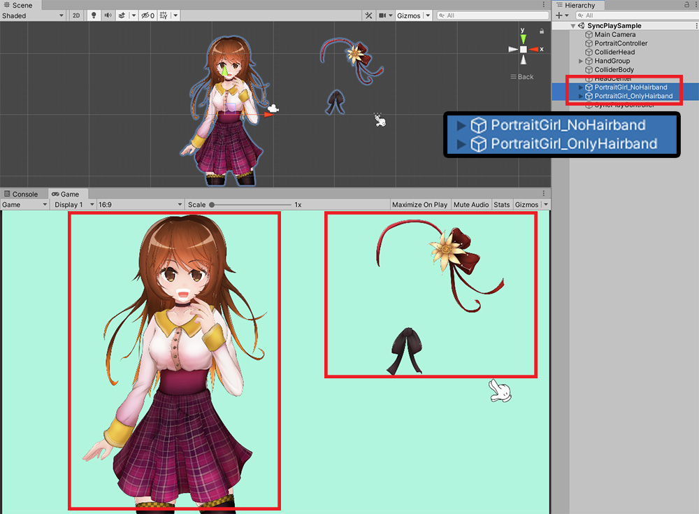
데모의 캐릭터에서 헤어밴드와 리본(이하 "헤어밴드")만 따로 분리한 씬을 준비했습니다.
캐릭터만 애니메이션이 동작하도록 만들고, 헤어밴드는 캐릭터에 동기화 되도록 만들어봅시다.
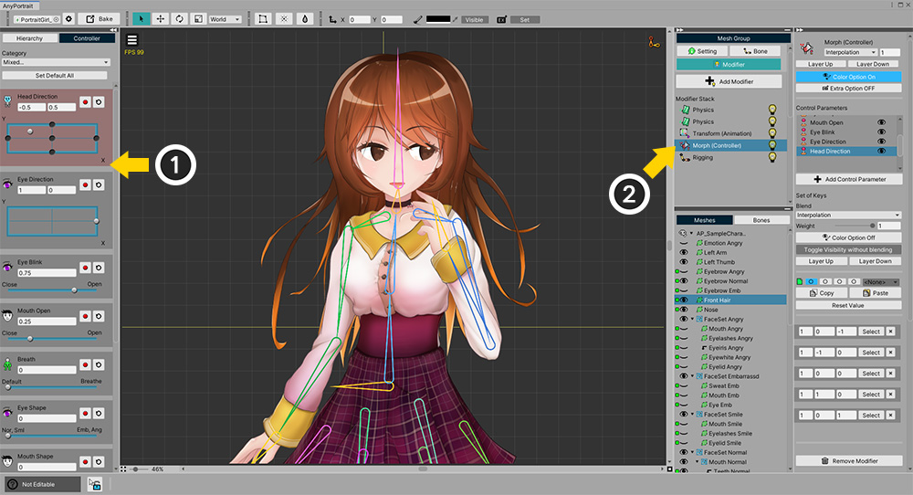
동기화를 위해서는 애니메이션과 컨트롤 파라미터가 동일해야합니다.
캐릭터를 열면 컨트롤 파라미터가 모디파이어에 등록되어 있는 상태입니다.
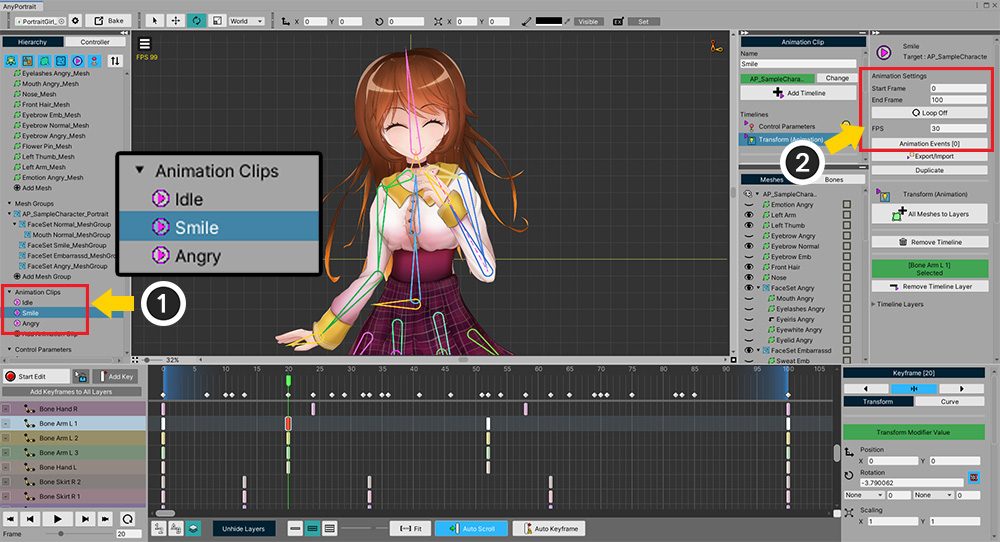
(1) 캐릭터는 Idle, Smile, Angry의 3개의 애니메이션을 가지고 있습니다.
(2) 이 애니메이션의 FPS와 길이를 기억해주세요.

헤어밴드를 에디터로 열면 동기화될 대상과 동일한 컨트롤 파라미터들이 존재해야합니다.
또한 컨트롤 파라미터에 따라 모디파이어로 움직일 수 있도록 구현되어 있어야 합니다.
(다만 본은 동기화 대상이 아니므로, 본까지 동일하게 만들 필요는 없습니다.)
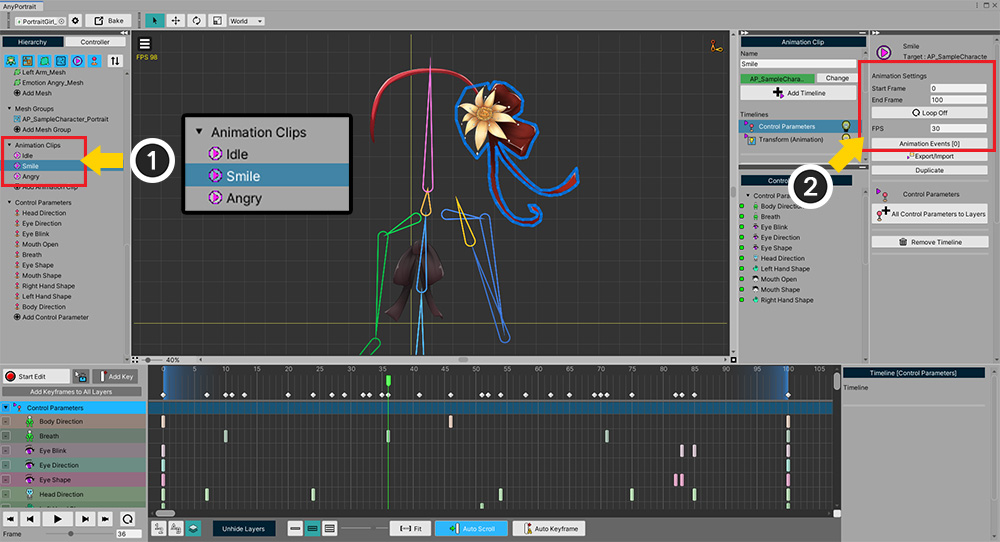
(1) 애니메이션도 동일하게 Idle, Smile, Angry의 3개입니다. 이름이 다르다면 동기화되지 않습니다.
(2) 각각의 애니메이션 길이와 FPS도 동기화 대상과 같아야 합니다.
이제 아래의 스크립트를 작성하여 헤어밴드가 캐릭터에 동기화되도록 만들어봅시다.
using UnityEngine;
using AnyPortrait;
public class SyncPlaySample : MonoBehaviour
{
public apPortrait character;
public apPortrait hairband;
void Update()
{
//A키를 누르면 hairband가 character에 동기화합니다.
if(Input.GetKeyDown(KeyCode.A))
{
hairband.Synchronize(character, true, true);
hairband.transform.position = character.transform.position;
}
//S키를 누르면 hairband의 동기화가 해제됩니다.
if(Input.GetKeyDown(KeyCode.S))
{
hairband.Unsynchronize();
hairband.StopAll();
hairband.transform.position = new Vector3(10.0f, 0.0f, 0.0f);
}
}
}
Synchronize 함수와 Unsynchronize 함수를 이용하여 동기화를 설정하거나 해제할 수 있습니다.
Synchronize 함수로 애니메이션이나 컨트롤 파라미터를 선택적으로 동기화할 수 있습니다.
여기서는 2개의 true를 넣어서 모두 동기화를 하도록 만들었습니다.
함수에 대한 자세한 설명은 관련 페이지를 참고해주세요.
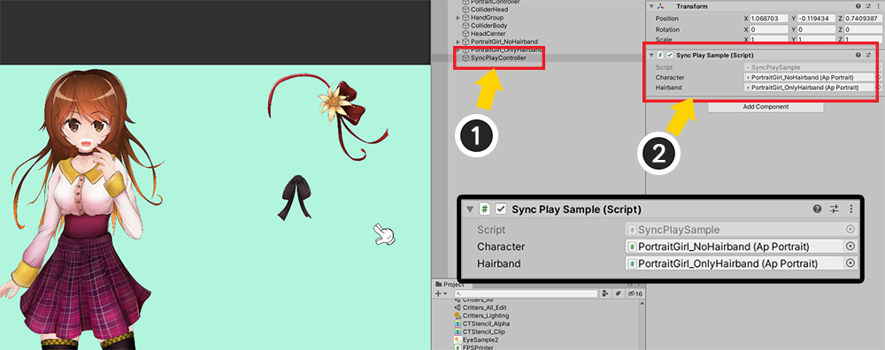
(1) 새로운 GameObject를 만듭니다.
(2) 작성한 스크립트를 추가하고, 캐릭터와 헤어밴드를 각각 할당합니다.
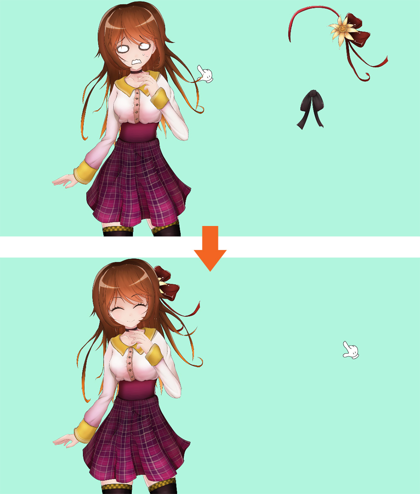
게임을 실행하고 A키를 누르면 헤어밴드가 캐릭터에 부착되고, 애니메이션과 컨트롤 파라미터가 동기화되어 움직이는 것을 볼 수 있습니다.
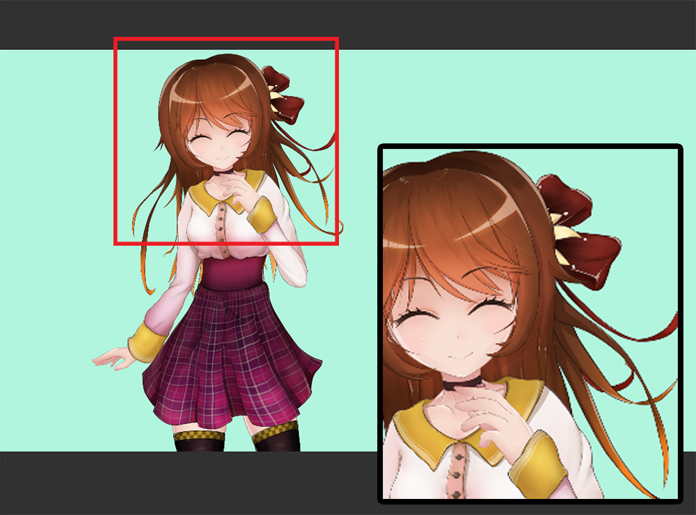
하지만 헤어밴드의 메시들의 렌더링 순서가 적절하지 않은 것을 볼 수 있습니다.
스크립트로 헤어밴드의 메시들의 렌더링 순서를 직접 설정해야합니다.
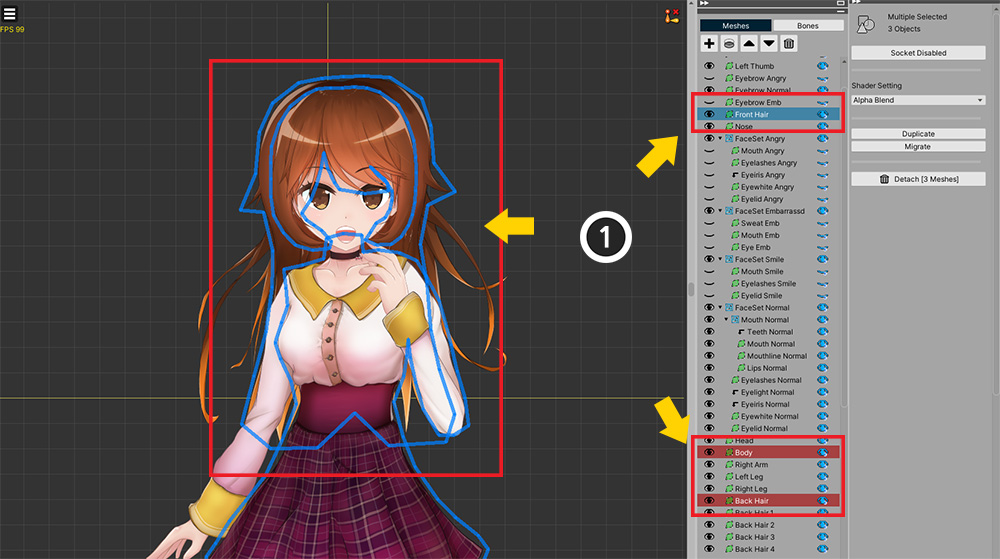
(1) 캐릭터를 열고 헤어밴드의 메시들이 어디에 위치해야하는지 확인합니다.
헤어밴드의 메시들이 렌더링되어야 하는 순서보다 "바로 뒤에 위치한 메시"들의 이름을 기억합시다.
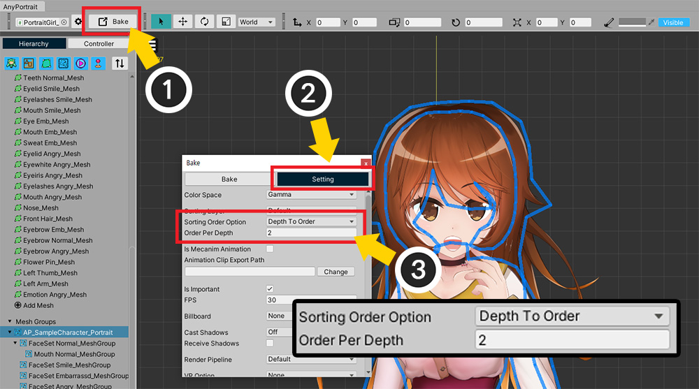
캐릭터의 메시들의 Sorting Order가 렌더링 순서에 따라 다르게 할당되도록 만들어야 합니다.
(1) Bake 버튼을 누릅니다.
(2) Setting 탭을 선택합니다.
(3) Sorting Order Option을 Depth To Order로 변경하고, Order Per Depth를 2로 설정합니다.
Order Per Depth가 2 이상이 되어야 기존의 메시들 사이에 새로운 메시를 넣을 수 있을 것입니다.
설정이 끝나면 Bake를 실행합니다.
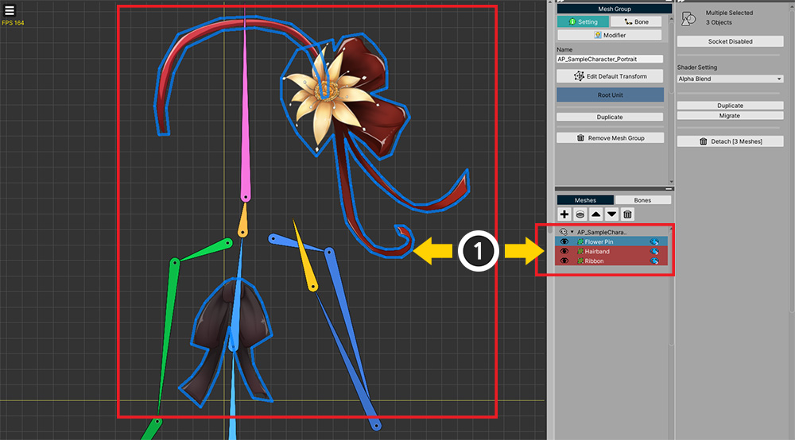
(1) 헤어밴드를 열고 메시들의 이름을 모두 기억합니다.
이제 앞서 기억해둔 메시들의 이름을 이용하여 Sorting Order를 지정하는 코드를 스크립트에 아래와 같이 추가합니다.
using UnityEngine;
using AnyPortrait;
public class SyncPlaySample : MonoBehaviour
{
public apPortrait character;
public apPortrait hairband;
void Update()
{
//A키를 누르면 hairband가 character에 동기화합니다.
if(Input.GetKeyDown(KeyCode.A))
{
hairband.Synchronize(character, true, true);
hairband.transform.position = character.transform.position;
//Flower Pin 메시는 Front Hair 메시보다 앞에 위치합니다.
hairband.SetSortingOrder("Flower Pin", character.GetSortingOrder("Front Hair") + 1);
//Ribbon 메시는 Body 메시보다 앞에 위치합니다.
hairband.SetSortingOrder("Ribbon", character.GetSortingOrder("Body") + 1);
//Hairband 메시는 Back Hair 메시보다 앞에 위치합니다.
hairband.SetSortingOrder("Hairband", character.GetSortingOrder("Back Hair") + 1);
}
//S키를 누르면 hairband의 동기화가 해제됩니다.
if(Input.GetKeyDown(KeyCode.S))
{
hairband.Unsynchronize();
hairband.StopAll();
hairband.transform.position = new Vector3(10.0f, 0.0f, 0.0f);
}
}
}
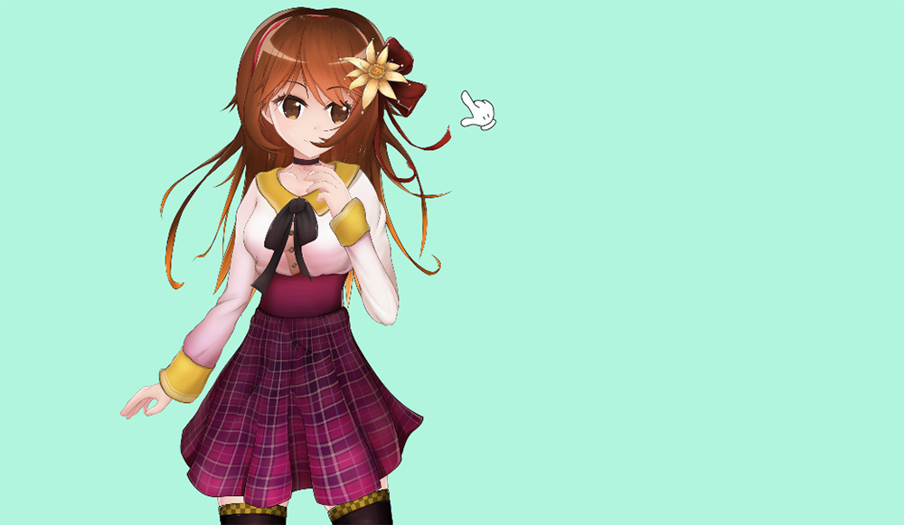
게임을 다시 실행하고 A키를 누르면 이제 헤어밴드의 메시들이 정상적인 위치에서 렌더링되는 것을 볼 수 있습니다.
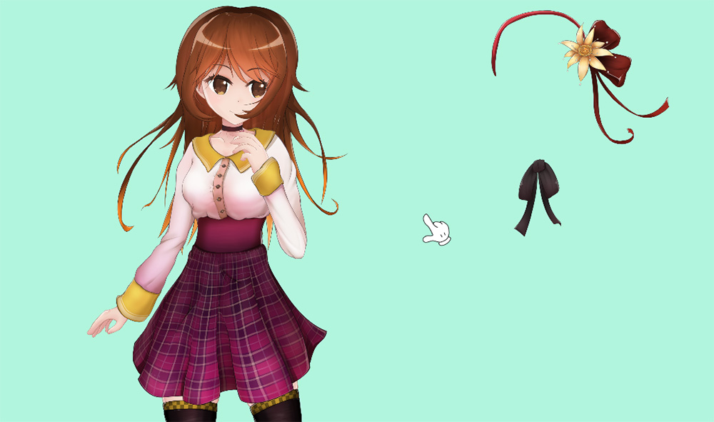
S키를 누르면 Unsynchronize 함수에 의해서 동기화가 해제되는 것을 볼 수 있습니다.
루트 유닛 동기화
1.3.4
Synchronize의 함수를 이용할 때, 애니메이션을 동기화하지 않을 수 있습니다.
하지만 만약 애니메이션을 동기화하지 않더라도 루트 유닛이 전환되는 것을 동기화하고자 하는 경우가 있습니다.
컨트롤 파라미터를 동기화하거나 본을 동기화할 때 특히 필요한 기능일 것입니다.
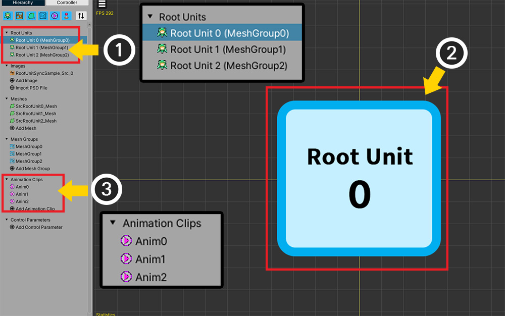
먼저 "동기화의 대상"이 되는 캐릭터입니다.
(1) 3개의 루트 유닛(Root Unit)이 등록되어 있습니다.
(2) 각각의 루트 유닛의 이미지는 위와 같이 숫자로 구분하기 쉽게 만들었습니다.
(3) 각각의 루트 유닛이 실행되도록 3개의 애니메이션 클립이 생성되어 있습니다.
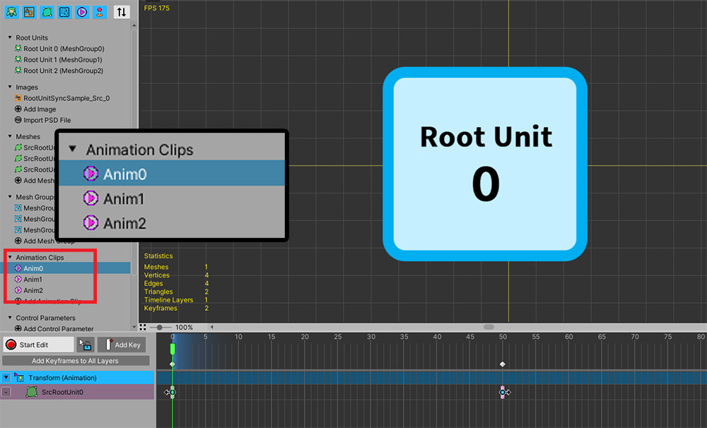

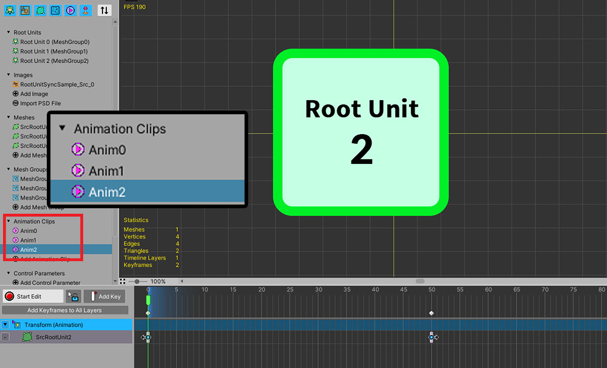
3개의 애니메이션은 각각의 루트 유닛을 대상으로 하고 있기 때문에, 애니메이션을 재생하면 위와 같이 루트 유닛이 전환될 것입니다.
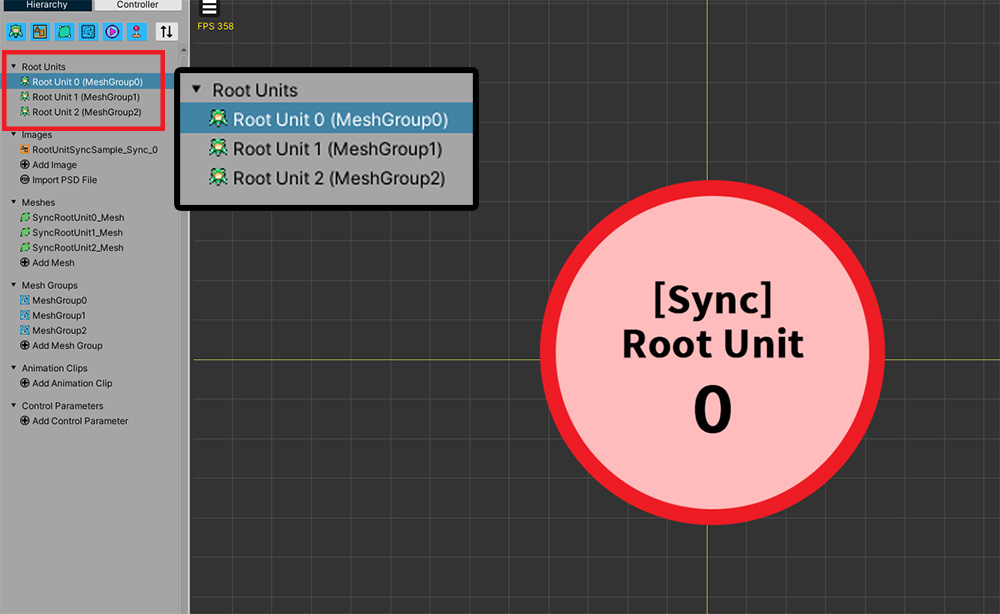
이번에는 "동기화를 할" 캐릭터입니다.
동일하게 3개의 루트 유닛이 있습니다.
하지만 애니메이션이 없어서 자체적으로 루트 유닛이 전환될 수 없는 캐릭터입니다.
스크립트를 아래와 같이 작성하여 대상인 루트 유닛으로 전환되도록 동기화해봅시다.
using UnityEngine;
using AnyPortrait;
public class RootUnitSync : MonoBehaviour
{
//애니메이션이 재생되는 캐릭터
public apPortrait mainCharacter;
//메인 캐릭터에 동기화를 할 캐릭터
public apPortrait syncCharacter;
void Start() { }
void Update()
{
//숫자키를 입력하면 메인 캐릭터의 애니메이션이 재생되어 루트 유닛이 전환됩니다.
if(Input.GetKeyDown(KeyCode.Alpha1)) { mainCharacter.Play("Anim0"); }
if(Input.GetKeyDown(KeyCode.Alpha2)) { mainCharacter.Play("Anim1"); }
if(Input.GetKeyDown(KeyCode.Alpha3)) { mainCharacter.Play("Anim2"); }
//루트 유닛을 동기화합니다.
if(Input.GetKeyDown(KeyCode.A))
{
syncCharacter.Synchronize(mainCharacter, false, false, true);
}
//동기화를 해제합니다.
if(Input.GetKeyDown(KeyCode.S))
{
syncCharacter.Unsynchronize();
}
}
}
Synchronize 함수의 인자 중 "루트 유닛 동기화" 요청이 true인 것을 확인해주세요.
주의
루트 유닛 동기화 요청은 다음의 경우에 동작하지 않습니다.
- 루트 유닛의 개수가 1개 이하거나 서로 개수가 다른 경우
- 애니메이션이 동기화되는 경우 (애니메이션 동기화는 루트 유닛 동기화 기능을 포함합니다.)
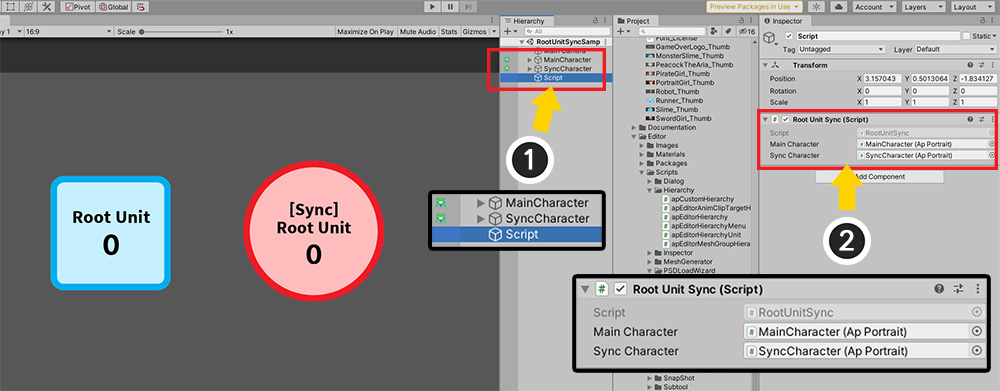
완성된 스크립트를 유니티 씬에 배치해봅시다.
(1) MainCharacter와 SyncCharacter가 생성되어 있으며, 새로운 GameObject를 만들어서 위의 스크립트를 추가합니다.
(2) 스크립트의 각 apPortrait 멤버들을 적절히 할당합니다.
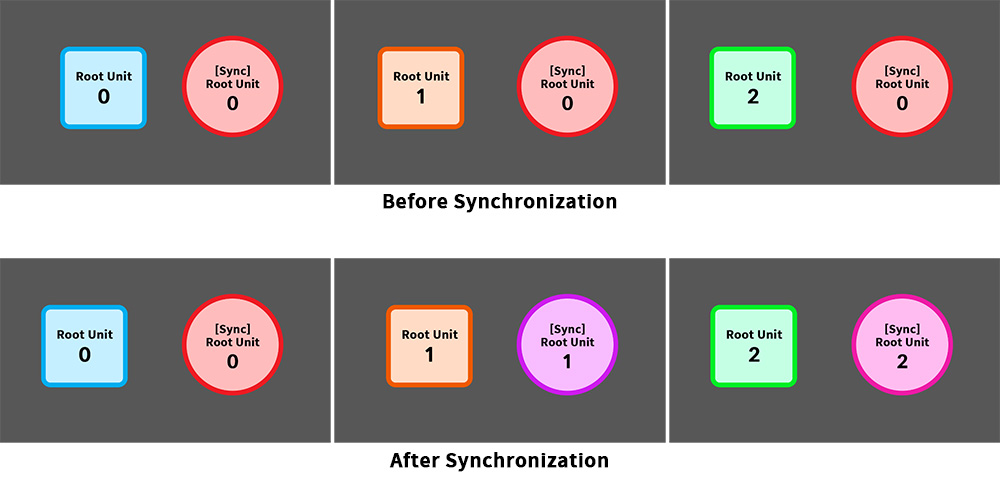
이제 게임을 실행해봅시다.
메인 캐릭터의 애니메이션에 따라서 루트 유닛이 전환됩니다.
동기화를 하면, 동기화된 캐릭터도 같이 루트 유닛이 전환되는 것을 볼 수 있습니다.